Latest
Activity 1: Needs Assessment Research Completed
The Startup Lab partnership announces the successful completion of the Needs Assessment Research and the publication of the Transnational Needs Assessment Report.
The Startup Lab partnership announces the successful completion of the Needs Assessment Research and the publication of the Transnational Needs Assessment Report.

The partners of the Startup Lab: Empowering Adults to Build Digital Businesses project gathered online for the 8th Project Meeting to continue the collaborative development of the project's educational resources.

Partners of the Erasmus+ project Startup Lab came together in İzmir, Türkiye, for the 2nd Transnational Project Meeting, hosted by EduXperts.

Throughout March and April, project partners organized a series of local dissemination events across their respective countries.

Project partners held their 7th online meeting, focusing on the continuous development of the training program and fine-tuning preparations for the upcoming transnational project meeting in İzmir.

Project partners held an online meeting to kick off the development of the training program and its curriculum content.

Project partners gathered for a productive online meeting to review the latest milestones of the Needs Assessment Report and strategically map out the next phases of the initiative.
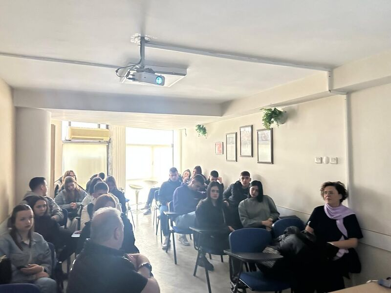
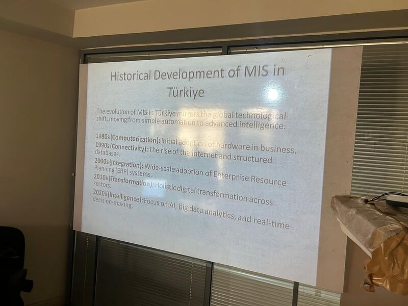
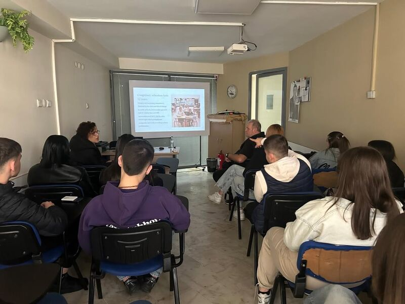
As a project partner, we hosted an international mobility activity in İzmir as part of the Erasmus+ project "K121 VET Information Systems in Economics - Administration" (2025-1-EL01-KA122-VET-000329554), welcoming a group of vocational high school students from 1o EPAL METSOVOU in Metsovo, Greece. During the mobility, students explored CRM (Customer Relationship Management) and ERP (Enterprise Resource Planning) systems — observing not only how these systems are developed, but also how they are applied in a real business environment.
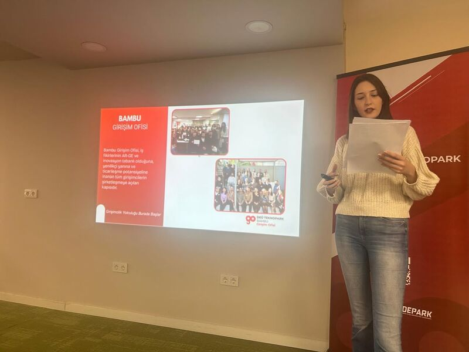
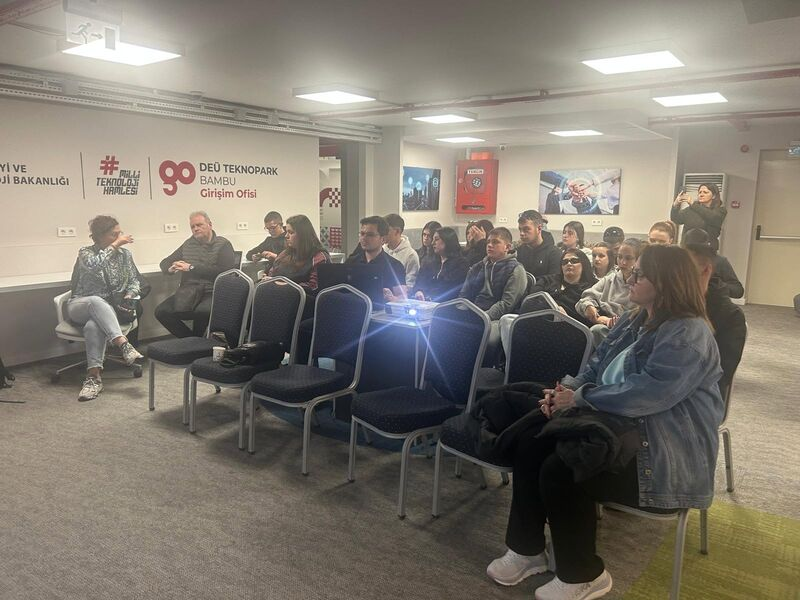
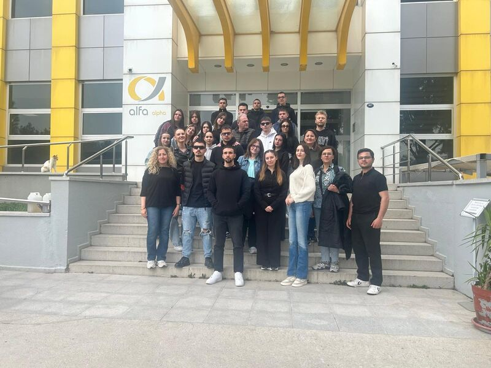
We had the opportunity to visit the Bambu Entrepreneurship Office at Dokuz Eylül University Technopark together with our Greek students. During this inspiring visit, students gained valuable insights into entrepreneurship, innovation, and company formation processes — a practical overview of how ideas evolve into startups, covering business development, incubation support, and the entrepreneurial ecosystem within the technopark.
It was a highly engaging experience where students explored real-world examples and learned about the steps required to establish and grow a company in a dynamic innovation environment. A big thank you to the Bambu team for hosting us and sharing their expertise!
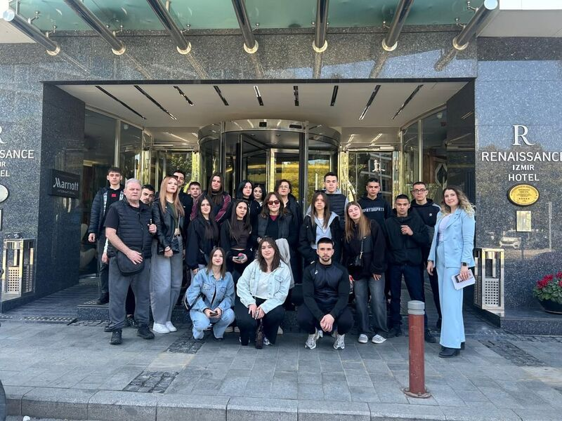
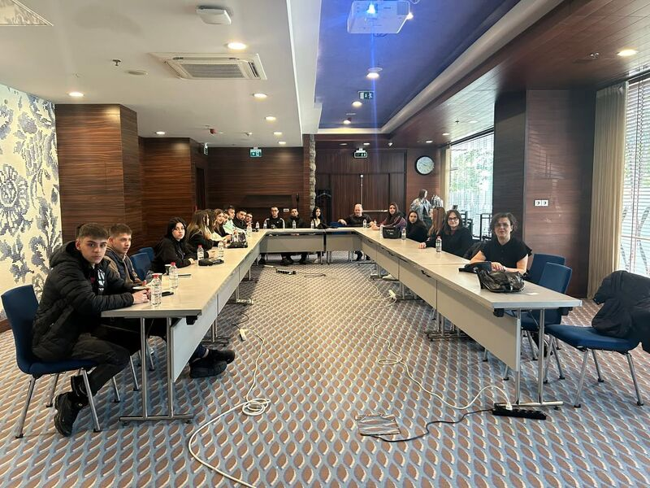
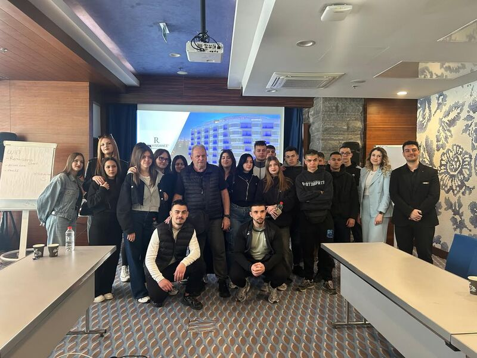
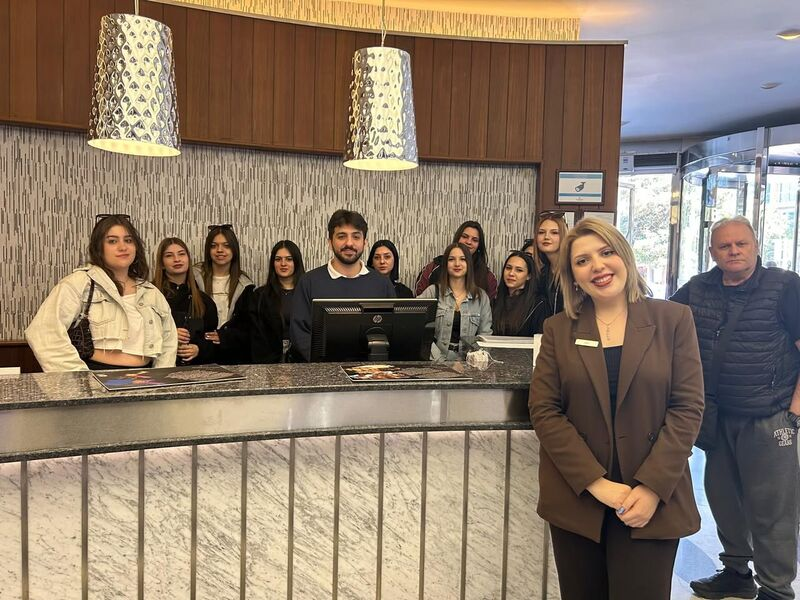
As part of our mobility activities in İzmir, we had the pleasure of visiting the Renaissance İzmir Hotel, a member of the Marriott International group. Our students had the opportunity to closely observe how CRM (Customer Relationship Management) and ERP (Enterprise Resource Planning) systems are used in real tourism operations — from managing guest experiences to optimizing internal processes.
This hands-on experience allowed our students to connect theory with practice and better understand the digital transformation of the tourism sector. We thank the Renaissance İzmir Hotel team for their warm welcome and for sharing their expertise with our students.
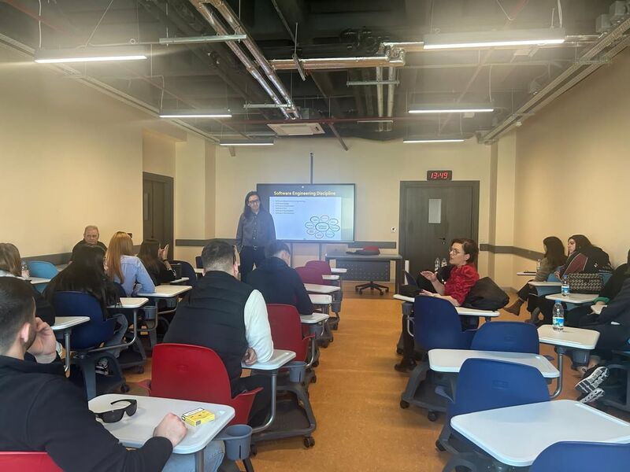
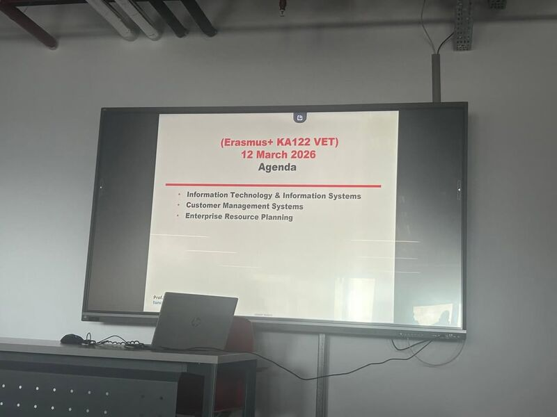
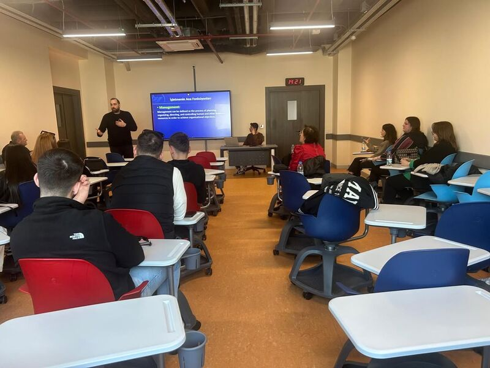
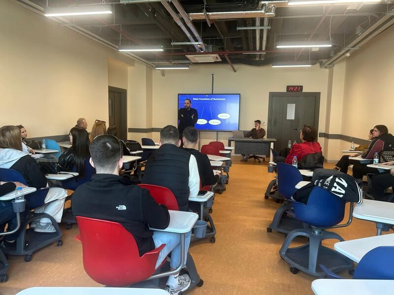
As part of our Erasmus+ mobility, we had the opportunity to visit Yaşar University in İzmir. The International Relations Office welcomed us warmly and gave a heartfelt presentation about the university's international vision and the opportunities it offers students.
We also attended an inspiring session on software systems, CRM, and ERP, delivered by Assoc. Prof. Korhan Karabulut (Software Engineering Department), Research Assistant Hüseyin Ozan Altın, and Prof. Ahmet Tuncay Ercan (Management Information Systems Department), together with Dr. Efthymia Staiou from the Industrial Engineering Department. They provided valuable insights into how CRM and ERP systems are developed and applied in real business environments, as well as the fundamentals of modern software systems.
Dr. Staiou being Greek was a wonderful coincidence, creating a special connection with our Greek group — part of the session was even delivered in Greek, making the experience even more interactive and culturally engaging. We thank Yaşar University for their kind hospitality.

The fourth online coordination meeting of the Startup Lab project was successfully held with the participation of all project partners.
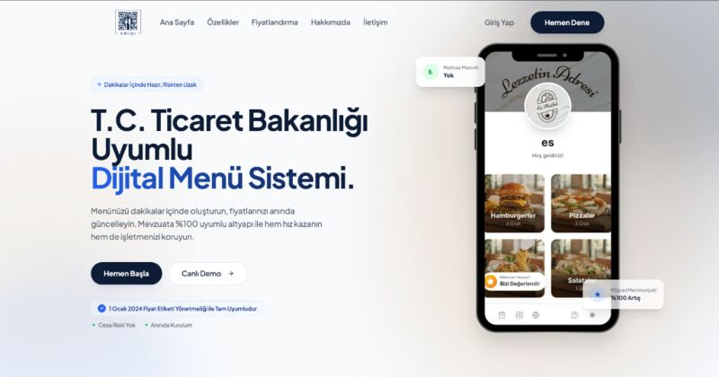
Introducing EduQR: a next-generation digital interaction platform by the EduXperts tech team, providing a fast, contactless, and eco-friendly customer experience — fully compatible with Ministry of Commerce price label regulations, with real-time synchronization for prices, menus, and info.
eduqr.tr →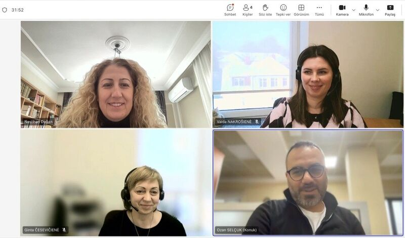
Partners of the StartupLab Project came together for their third online coordination meeting to review the progress of Activity 1: Needs Assessment Report and align on next steps. Surveys are now nearly completed across all participating countries — an important milestone in the research phase.
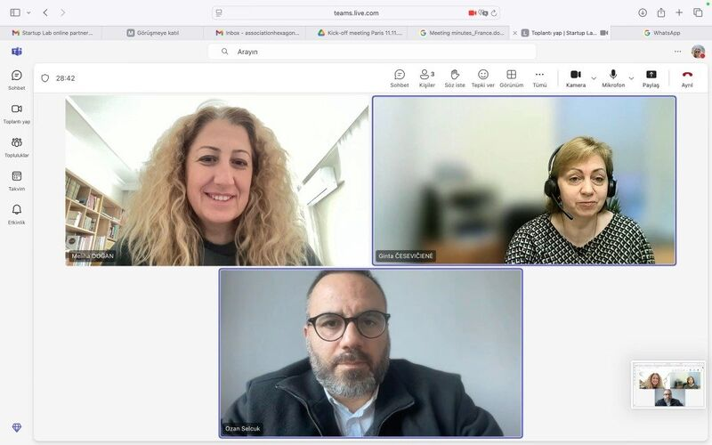
Partners aligned their data collection approach across all partner countries, reviewing the desk research template and draft survey/interview tools prepared by Association Hexagonale — enriched with new questions and practical insights shaped by local contexts.
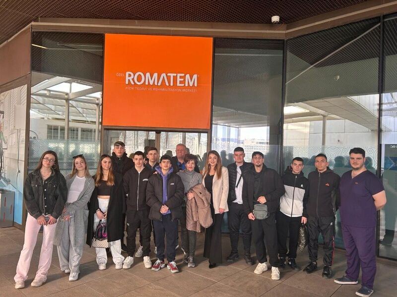
Our Physiotherapy students visited Romatem, a leading center in physical therapy and rehabilitation, engaging with expert physiotherapists and observing modern rehabilitation techniques in action.
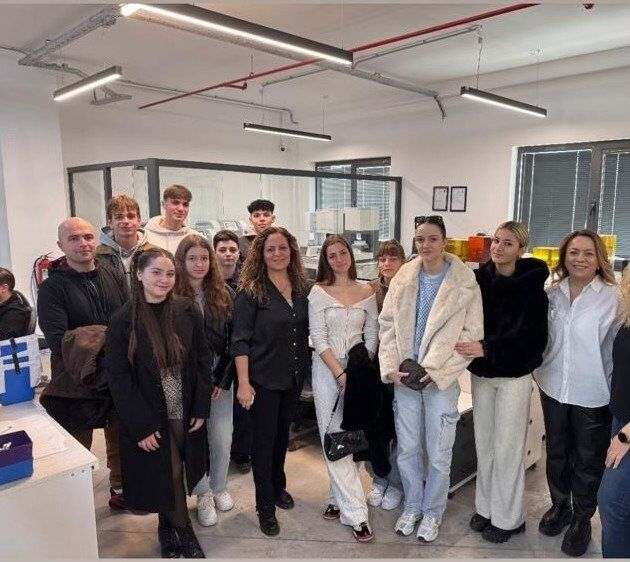
Our Dental Prosthetics students visited Dentarium, one of İzmir's largest dental prosthesis laboratories, receiving practical training in a laboratory equipped with modern technology.
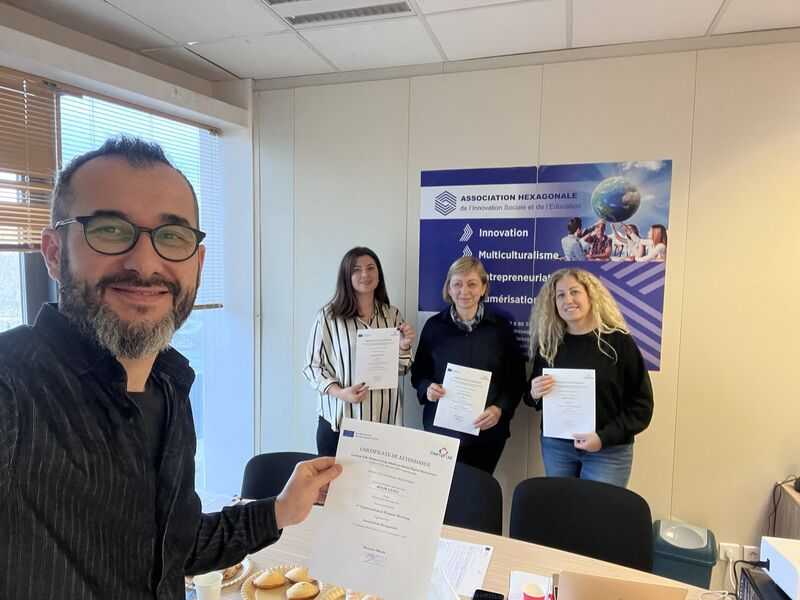
The first transnational meeting of the Startup Lab project took place in France. Partners discussed project goals, work packages, and roles, setting a strong start for a project that empowers adults with digital entrepreneurship skills.
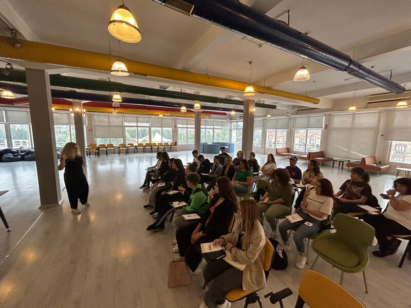
A training session for young people covering effective use of digital tools, data security, strong passwords, responsible social media behavior, and verifying information online.
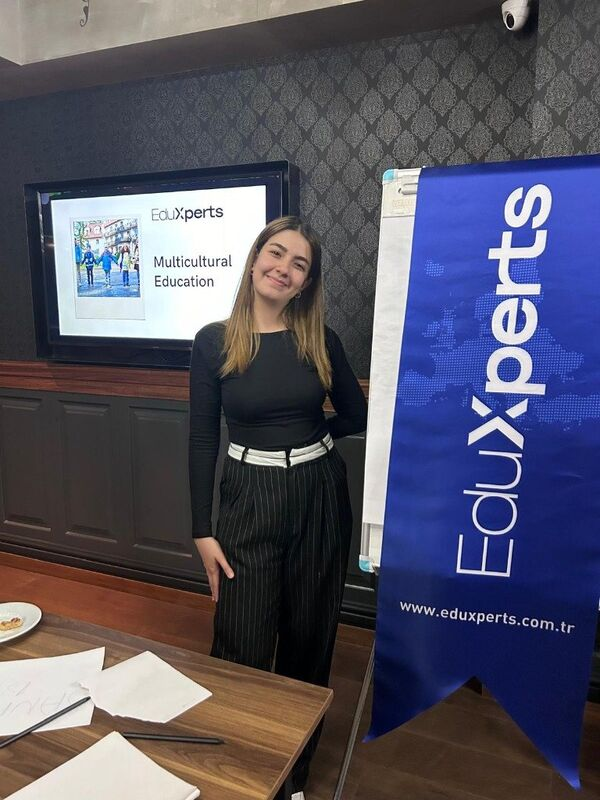
We hosted primary school teachers from Greece for our Erasmus KA1 course on Multicultural Education, exploring inclusive teaching strategies through interactive workshops and cultural exchange activities.
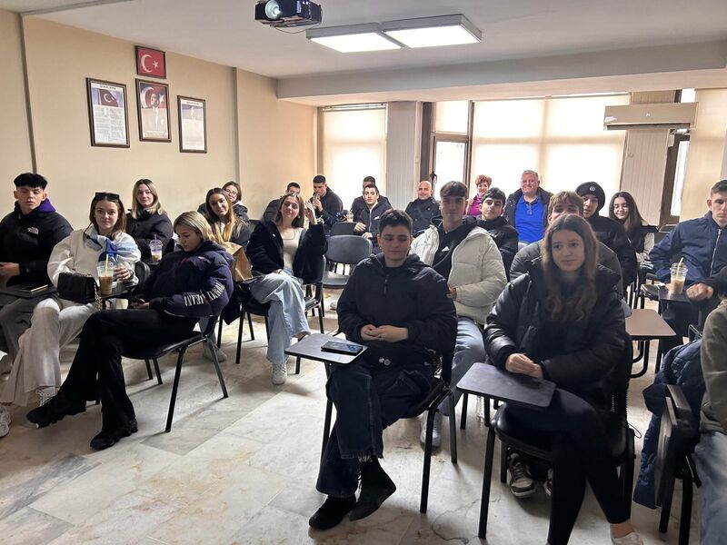
We hosted the team of 7th Epaggelmatiko Lykeio Larisa for the Erasmus+ KA1 VET project "Skills Development through Innovative Practices," a training day focused on digital health applications for vocational healthcare students and teachers.
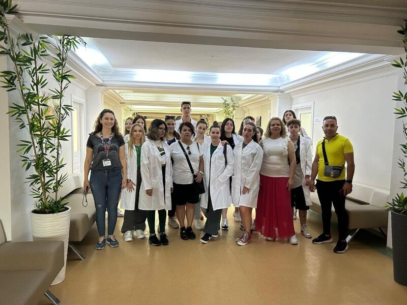
Students from ARTA Health Vocational High School (Greece) visited Batı Anadolu Health Vocational High School, receiving hands-on CPR training and observing medical professionals across different units at Batı Anadolu Hospitals.
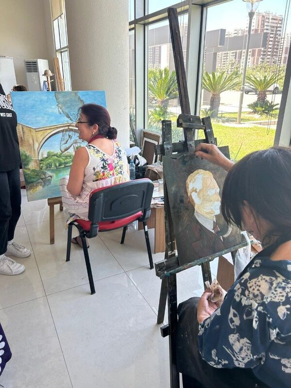
We hosted vocational students specializing in geriatrics from Greece for a study visit to the Bostanlı Bilge Çınarlar Healthy Aging Center and the Alzheimer Center, supported by Karşıyaka Municipality.